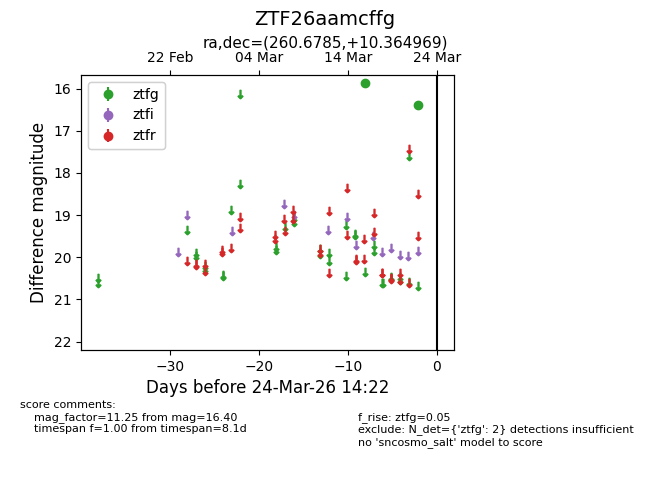
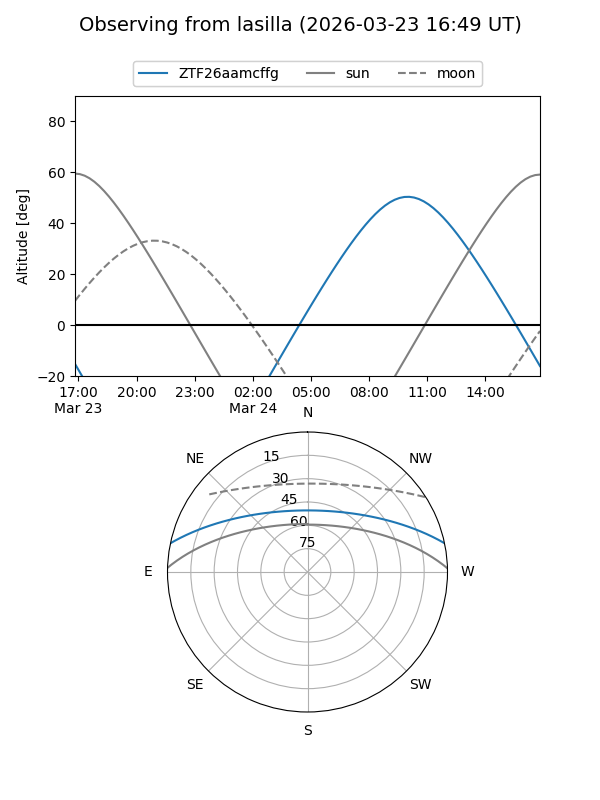
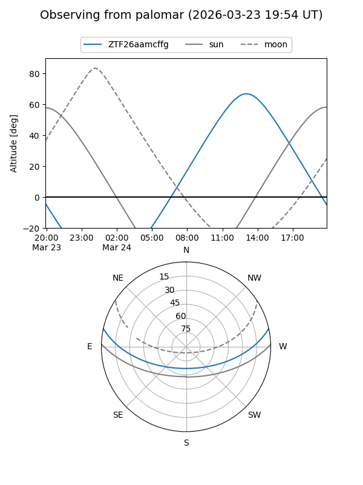

ZTF26aamcffg
Target ZTF26aamcffg at 2026-03-24 14:25
Aliases and brokers:
FINK: link
Lasair: link
ALeRCE: link
alt names
ZTF26aamcffg (ztf,fink_ztf)
Coordinates:
equatorial (ra, dec) = 260.6785,+10.36497
equatorial (HMS+DMS) = 17:22:42.85,+10:21:53.89
galactic (l, b) = (32.3523,+24.36553)
Flags:
Photometry:
last ztfg=16.40
2 ztfg detections
Lightcurve

Visibility


Additional plots